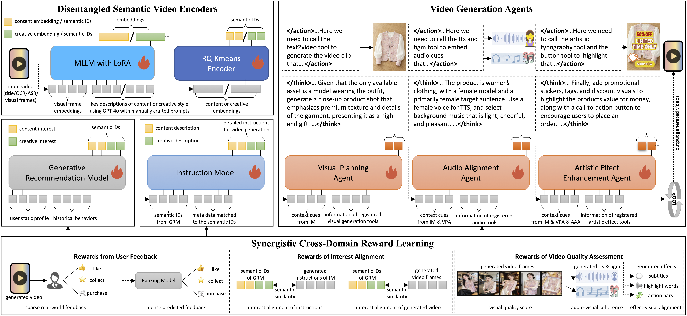

Recommendation as Generation: Unifying Personalized Video Generation and Recommendation at Industrial Scale
Recommendation-as-Generation turns recommendation from retrieving existing videos into generating personalized, interest-aligned videos on demand.
Abstract
Traditional short-video recommendation systems match user interest to a fixed pool of pre-produced videos, which limits their ability to capture fine-grained and dynamic preferences. We propose Recommendation-as-Generation (RaG), a new paradigm that generates personalized videos on demand from inferred user interest. Our framework unifies generative recommendation and video generation through shared semantic IDs (SIDs), which disentangle video representation into content semantics and creative style semantics, enabling both fine-grained modeling of user interest and controllable generation of interest-aligned videos. We further develop Video Generation Agents (VGAs) that are conditioned on inferred SIDs to drive hierarchical planning and refinement for video creation, including visual composition, audio alignment, and artistic effect enhancement. To optimize the framework, we effectively introduce a synergistic cross-domain reward learning mechanism that jointly enforces interest alignment, user feedback, and video quality assessment.
We deploy RaG on an industrial-scale platform with over 400 million daily active users and evaluate it in a revenue-critical advertising scenario. Online A/B tests show up to 1.87% ad revenue improvement compared to a strong production GRM baseline, demonstrating its effectiveness in driving further revenue gains beyond generative recommendation. Our results highlight a closed-loop generative system as a promising paradigm for integrating personalized video generation into recommendation.
Framework Overview

Open full PDFNo timeline assets found
Add user folders under assets/users/, place ordered images and videos inside, then run npm run manifest.